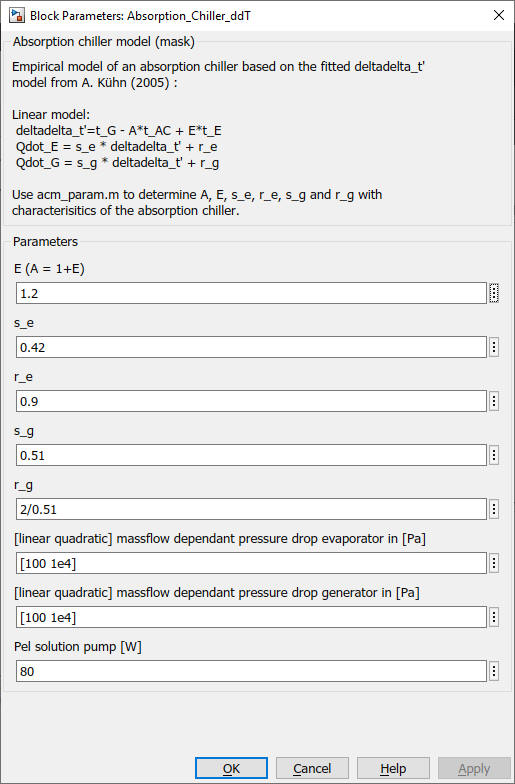

Absorption_Chiller_ddT
Path: CARNOT/Source/Chiller
Purpose:
This block calculates the capacities and cop of the absorption chiller with the
delta-delta-T model.
Description
Empirical model of an absorption chiller based on the fitted deltadelta_t'
model of [Kuehn, 2005].
Linear model:
deltadelta_t'=t_G - A*t_AC + E*t_E
Qdot_E = s_e * deltadelta_t' + r_e
Qdot_G = s_g * deltadelta_t' + r_g
Use acm_param.m to determine A, E, s_e, r_e, s_g and r_g with characterisitics of the absorption chiller.
Input:
| THBload_in | : | Thermo-Hydraulic Bus of the load (return of the cooling circuit) |
| THBhot_in | : | Thermo-Hydraulic Bus of the driving source (high temperature side) |
| THBcool_in | : | Thermo-Hydraulic Bus of the waste heat (return pipe from air convector) |
| on | : | control signal 0 = off, 1 = on |
Output:
| THBload | : | Thermo-Hydraulic Bus of the load (flow line of the cooling circuit) |
| THBhot | : | Thermo-Hydraulic Bus of the driving source (high temperature side) |
| THBcool | : | Thermo-Hydraulic Bus of the waste heat (flow line to the air convector) |
| Pel_Pump | : | electrical power of the pumps in W |
| Qdot | : | thermal power in W |
Parameters and Dialog Box:

Examples:
Open the example explorer from the Matlab command window
ExampleBrowser
or load the examples via the CARNOT library.
Literature:
A. Kuehn, F. Ziegler. Operational results of a 10 kW absorption chiller
and adaptation of the characteristic equation,
Proc. of the 1st Int. Conf. Solar Air Conditioning, 6-7 October 2005,
Bad Staffelstein, Germany
F. Ziegler, H.-M. Hellmann, C. Schweigler: An approximative method for
modeling the operating characteristics of advanced absorption chillers,
20th International Congress of Refrigeration, IIR/IIF, Sydney, 1999
Characteristics:
| Direct Feedthrough | : | Yes |
| Sample Time | : | Inherited from driving block |
| Vectorized | : | No |